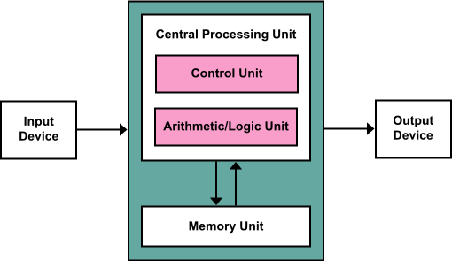

Machine Learning and Artificial Intelligence
There is a seemingly common thread right now in the tech industry around the confluence of terminology that can be used when addressing the broader practice of studying and applying machine learning to interesting problems. For some value of interesting.
First I want to start with a history of the term artificial intelligence. The term was coined by John McCarthy for the famous conference at Dartmouth that was held in 1956, hosted by that of Marvin Minksy, and Claude Shannon, as well. The conference’s aim was to study the idea that every aspect of learning or other feature of intelligence can, in principle, be so precisely described that a machine can be made to simulate it. Said differently the goal of the conference was to investigate the plausibility of a machine being able to emulate, at least at first perceptual, problems that were previously reserved for the domain of humans.
Definitions
I want to start this post with some definitions from some of the major literature in the field to normalize what is meant when using different words and phrases to describe the application of science to quantify and/or qualify some dataset.
The first term I will address is Machine Learning and I will decompose the phrase into its constituent components. Both machine, and learning.
Machine
Depending on your choice of common English dictionaries the definition of the word machine can vary. We will utilize the Oxford Dictionary which defines the term machine as follows:
An apparatus using mechanical power and having several parts, each with a definite function and together performing a particular task.
The definition fits that of a modern computer. Most modern consumer computers follow the Von Neumann architecture in that there are disparate components working together to perform a particular task. Mainly a Central Processing Unit, and a Memory Unit that work in orchestra to take as input some value, and produce another value as output. This is the definition that I will apply to the word machine.

Learning
We will also appeal to the Oxford Dictionary for the definition of the term learning.
The acquisition of knowledge or skills through study, experience, or being taught.
This definition is in line with something that is intuitive but can sometimes become lost in the noise of the every day higher level interactions we’re having with the world around us. We are, in real time, learning on many levels of abstraction that are presented to us through out cognitive faculties. Consciously learning the fundamental theory of algebra is a seemingly active exercise in which we study material to learn the theorem and how to apply it. However separate from that conscious learning, we are also subconsciously learning from many inputs we are receiving. Suppose we decide to stop studying our material on algebra and instead decide that we want to go for a jog. As we begin our journey things are going smoothly and when we aren’t paying attention we stumble on an obstruction in the middle of the pathway. As we stumble our brain is subconsciously using many inputs from our sensors contained within our system called the human body to right our trajectory to ensure we don’t fall. Using a seemingly more concrete example would be a gymnast performing a routine that they have repeatedly practiced until they are satisfied. A similar analogy could be made for the increase and decrease in requirement of oxygen within the body as we are burning more energy throughout the process of exercise. As our heart rate increases our respiration rate increases to compensate for the increase in oxygen required for metabolism.
Machine Learning
I want to formalize the definition of machine learning in the way that the research and industry tend to apply them.
I think about it in terms of Tom Mitchell’s definition, in his book Machine Learning, which offers a formal definition in the bounds by which science and engineering can work.
A computer program is said to learn from experience E with respect to some class of task T and performance measure P, if its performance measure P at task T as measured by P, improves with experience.
This definition also captures the fundamental areas of research and industry application that exist within machine learning.
Above, when referencing emulation of tasks that are normally performed by other systems that exist in the world, I mean that these systems can be a product of biological or human engineering efforts. There are many tasks that biological systems, such as humans and animals, perform which can be emulated using this process called machine learning. Actions that we perform such as recognizing objects around us, to understanding the approximate trajectory of an object, such as a ball, and being able to intercept that ball to catch it. Along with other processes such as understanding what someone is saying through the combination of speech and gesture recognition while communicating.
There are also other, external to the human psyche, tasks that we can use machine learning for as well. We may lack the biological sensors to measure many of the systems around us but we can build sensors for these systems and then use machine learning to have computers “learn” about these systems. Systems like the weather, astronomical objects, search engines, etc.
Artificial Intelligence
Now I want to address the term artificial intelligence in the same way that I had addressed machine learning. By decomposing it into its constituent words, defining them, and attempting to define what the combination of the two terms, means.
Artificial
The term artificial is defined by the Oxford Dictionary as follows:
Made or produced by human beings rather than occurring naturally, especially as a copy of something natural.
This term is a bit more broad in its definition in that many of the objects we see around us are an artificial representation of something naturally occurring. Things like artificial flowers, or artificial limbs that enable individuals perform tasks that might otherwise not be possible. The key interpretation here is the fact that it is the creation of something that seemingly isn’t naturally occurring. Notwithstanding the logical argument that could be made that there is some hierarchical interpretation to the idea of something being created by something that was created naturally, humans, ergo whatever was created could be interpreted as something naturally occurring.
Intelligence
Now we come to a seemingly ill-defined term that exist in the world of science and engineering. That of intelligence. When we look at the Oxford definition of the word we can see just how general the interpretation is:
The ability to acquire and apply knowledge and skills.
The ability to apply knowledge and skills is interestingly broad in its definition. As with the logical argument that could be made above about what really is artificial and what isn’t, a similar logical argument could be made in that if we create a machine that embodies some sort of skills or abilities that we as humans have acquired, are we creating an intelligent system? Or is the system itself required to acquire the referenced knowledge and skills. We might have to go one rabbit hole deeper in order to make this definition a bit more concrete.
Knowledge is defined as:
Facts, information, and skills acquired through experience or education; the theoretical or practical understanding of a subject.
Yet again we’re up against the wall with some of the lingual abstractions present in this definition. Facts, information, skills, experience, education, etc. all contain some sort of implicit definitions in which we tend to take for granted. Rather than looking into the definitions and etymologies of words used to describe a phenomenon that we are observing, we can appeal to a more rigorous definition of what intelligence may be. Legg and Hutter (2007) provide a working definition of machine intelligence.
Legg and Hutter start with an analysis of 70 or so definitions of intelligence from different areas of academia including researchers in artificial intelligence and psychologists. There are a few salient definitions from both backgrounds that I would like to reference.
“Intelligence is a general factor that runs through all types of performance.” A. Jensen
I quite like this definition because it affords us a general interpretation in that many of the systems that we build, deploy, and label as intelligent can logically satisfy this definition. All systems have performance measures used to justify whether or not that system is able to perform better than previously, due to some mechanism contributing to the idea. There are also others that are seemingly more philosophically intriguing as well:
“The capacity for knowledge, and knowledge possessed.” V. A. C. Henmon
This eludes to the idea that there is some form of consciousness that needs to exist, a self awareness of ones own capacity for knowledge. This is less concrete in the way of mathematical definition, but I do enjoy at least entertaining the idea if for nothing more than thought exercise.
Legg and Hutter (2007) distill these definitions down to something more general as their definition seems to capture many of the special case interpretations of the 70 odd quotes:
“Intelligence measures an agent’s ability to achieve goals in a wide range of environments.” S. Legg and M. Hutter
As they note in their paper this definition has implicit in it many of the abilities an agent should have to define it as intelligent, abilities such as learning, adapting, and understanding.
Artificial Intelligence
Now that we’ve defined artificial and intelligence, we can define what the two words mean together. It is an agent that doesn’t occur naturally that can some how achieve goals in a wide range of environments.
There is a more formal definition as is defined in Legg and Hutter (2007). That is left to the reader for investigation. For now we will leverage just the general linguistic definition of the term intelligence.
There are what seem to be direct lines that can be drawn between artificial intelligence and reinforcement learning in that both definitions and the latter’s frameworks encompass the process of training an agent on a given environment to improve its performance over time to achieve whatever goals have been defined, and depending on the area of research there is also the research into the transferability of these agents between many different environments. Whether it be an already trained agent being exposed to a new environment or whether a particular methodology is applicable to more than one environment.
Normalizing nomenclature
This leads me back to the reason for this writing. It is an attempt to normalize the nomenclature that we as an industry use when addressing the application of these technologies to problem spaces. There are many ways that these terms can become muddied and conflated and I want to ensure we’re all speaking the same language as we make the efforts to apply these technologies in new and interesting ways.
Example
I also want to provide a concrete example of where these definitions can be used in our specific problem space of technology systems. Depending on the scale at which we are analyzing a given system, one could be analyzing a single computational device that is part of a larger cluster of computational devices that are meant to distribute computational operations or storing state in a persistent manner. In respective parlance, distributed systems and databases.
When reasoning about the application of machine learning to systems such as these, there are many aspects of the system that we can attempt to model using methodologies that fall firmly in the machine learning definition. A relatively simple example would be the application of some form of novelty detection with respect to the operation of the system. When collecting sensor data at times when the system is considered in steady-state operation, or nothing is currently wrong with the system, we can use novelty detection techniques to model either the data that has been collected itself, or the data generating distribution that we assume our data set has been produced from. Commonly referred to methodologies used to perform this are the application of autoencoders which can learn to reconstruct an input given some compressed representation of that input, or something like a variational autoencoder which attempts to model the parameters of the data generating distribution that produced our dataset that we’re analyzing.
Where we can cross the line into the area of artificial intelligence is when we start to use models to affect change on the system that we are reasoning about. When we think about this from a particular perspective of infrastructure operations, it would be the assumption that a system that is artificially intelligent would be able to modify the configuration of a given distributed system to improve the operation of that system. This definition is more in line with that of reinforcement learning, that I haven’t covered in this post. This will be covered in later posts.
This may become part of a multi-post series in an effort to combat the “buzzwordyness”, for lack of a better term, of the industry side of the applications of these methodologies, and I will update posts accordingly.
More to come…
References
1 - A Collection of Definitions of Intelligence * 2 - A Formal Measure of Machine Intelligence * 3 - A Formal Measure of Machine Intelligence (Poster) * 4 - The History of Artificial Intelligence * 5 - A Proposal for the Dartmouth Summer Research Project on Artificial Intelligence